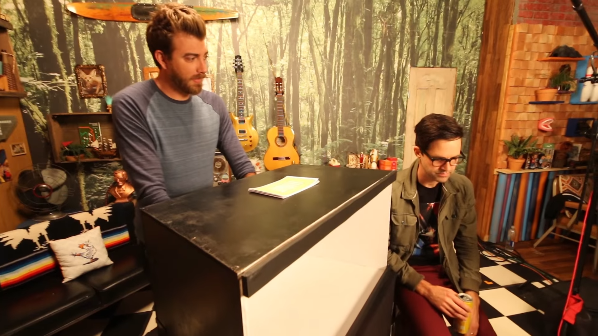
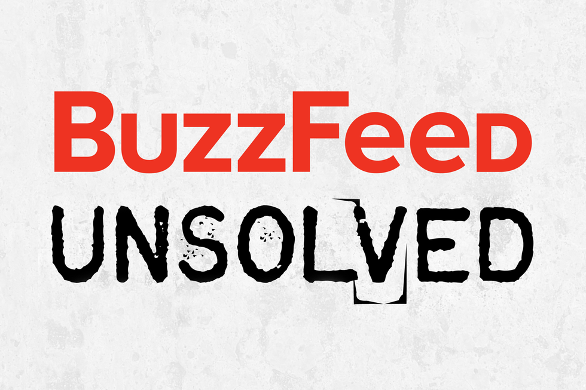
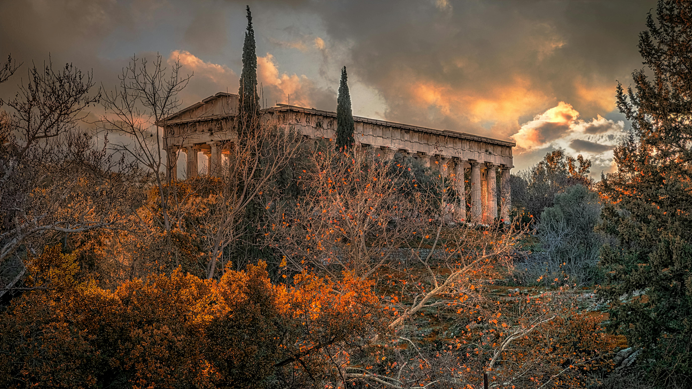
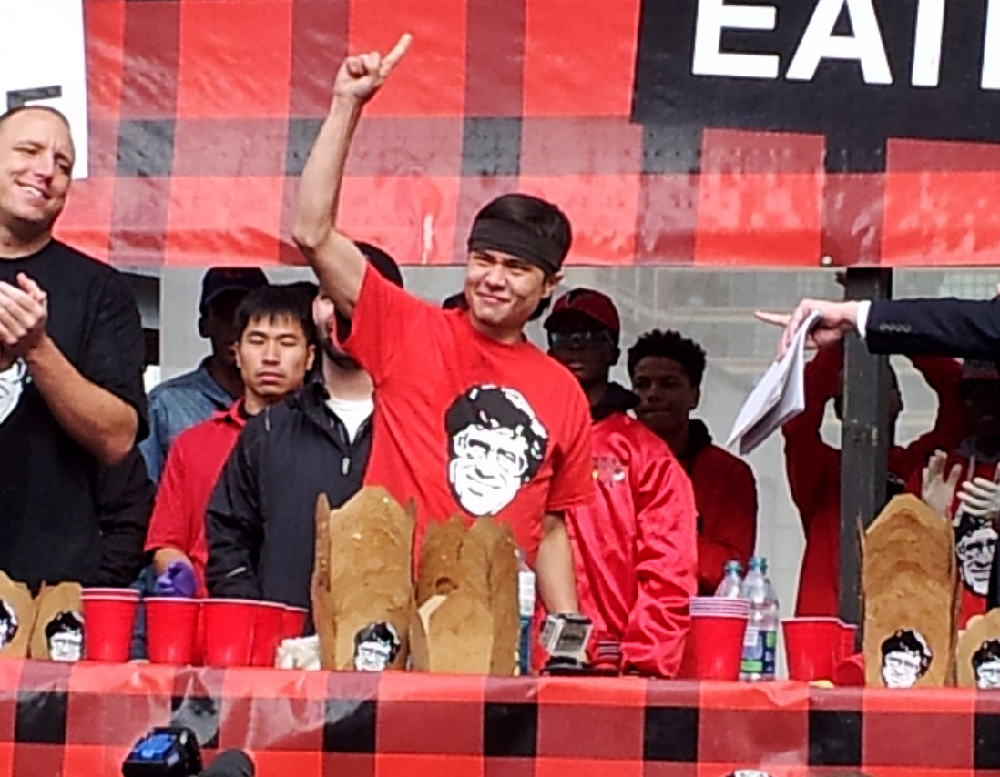

Luz's Top 5 Favorite Youtube Channels
By Luz Jimenez
#1. Good Mythical Morning
Rhett and Link, Vlogbrothers. 2016. Source: Wikimedia
Good Mythical Morning, often referred to as GMM, is a comedy talk show channel, hosted by Rhett McLaughlin and Link Neal. They typically post every weekday morning with different episodes aiming to get a good chuckle out of you, as well as start your morning off right. With over 19 million subscribers, they try to keep things interesting with blind taste tests, bizarre food, discussing everyday life, conducting experiments and reviews, and going through some pretty funny challenges.
#2. BuzzFeed Unsolved Network
BuzzFeed Unsolved Logo. Source: Wikimedia
BuzzFeed Unsolved is a webseries that was created by Ryan Bergara, and co-hosted by Shane Madej, exploring different unsolved cases, mostly revolving around famous criminal cases, mysteries, and investinging alleged supernatural haunted locations. They've investigated cases like Jack the Ripper, the haunted Queen Mary ship, and the Bermuda Triangle--just to name a few.
This webseries unforutnately ended in 2021, but it had a good run, considering the first video came out in 2016. Even though it's no longer really active, it's still a really popular webseries.
#3. Mythology & Fiction Explained
Parthenon of Athens, Greece. Source: Pexels
Mythology & Fiction Explained is basically a detailed storytelling and analysis of popular myths, legends, folkore, and classic literature from different cultures around the world. Marios Christou, the creator of the channel, has explored different Greek Myths and Norse mythology, and has even delved into Dante Alighieri's Divine Comedy.
This channel is great when you just want to deep-dive into different culutres and possibly stay in on a rainy day, with a nice piping hot cup of cocoa and some freshly baked cookies on the side. Or the channel's videos make for good bedtime stories, too.
#4. Matt Stonie
Matt Stonie. Source: Wikimedia
Matt Stonie is known as a competitive eater, and with over 16 million subscribers, a popular Youtuber as well. His Youtube videos typically consist of consuming masssive quantities of food, ranging from fast food items to popular homemade challenges, in record times. He challenges himself with the wildest challenges like eating 203 Chips Ahoy cookies, or eating 1620 Pocky sticks, and even having full menu items like consuming the entire Chick-fil-a menu in one sitting.
The way he tackles these challenges makes me want to try as well, but I know I probably won't be able to eat more than half a pack of Chips Ahoy cookies. Ah well! One can only dream.
#5. Zach Choi ASMR

Shishkebabs on Wooden Chopping Board. Source: Pexels
Zach Choi's channel primarily focuses on content that has Zach consuming large quantities of food, as well as cooking demonstrations. The cooking demonstrations go into detail, highlighting sounds like sizzling, chopping, and other various sounds that aim to provide a relaxing and immerisive experience for his viewers.
These videos are best watched after eating because all the scrumptious food he cooks looks heavenly, and you'll surely get hungry if you watch for more than five minutes.
Resources:
Images:
- Green, Hank. Rhett and Link on Good Mythical Morning. 2016. Wikimedia. Accessed 5 May, 2025.
- BuzzFeed. BuzzFeed Unsolved Logo. 2017. Wikimedia. Accessed 5 May, 2025.
- Desipris, George. Parthenon of Athens, Greece. 2018. Pexels. Accessed 5 May, 2025.
- Atomicred. Matt Stonie winning the 2014 Poutine Eating World Championship in Ontario, Canada. 2014.Wikimedia. Accessed 5 May, 2025.
- Gkortsilas, Marios. Shishkebabs on a Cutting Board. 2022. Pexels. Accessed 5 May, 2025.
Fonts:
- Body
- Roboto, via Google Fonts